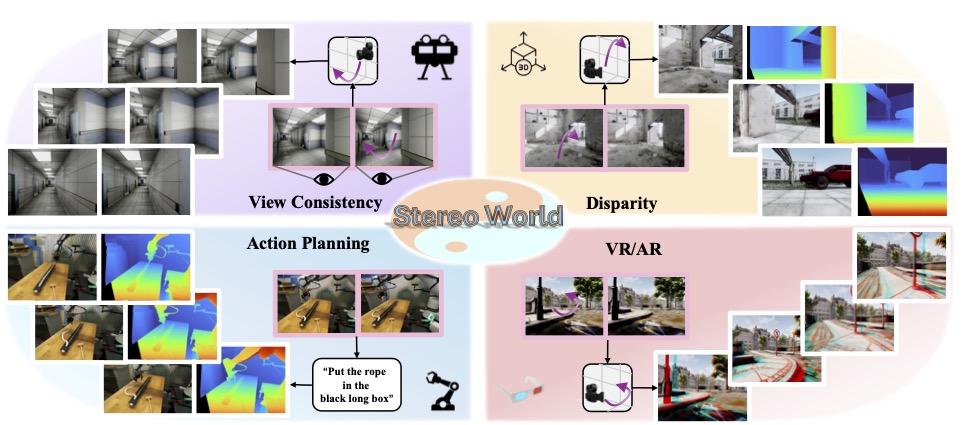
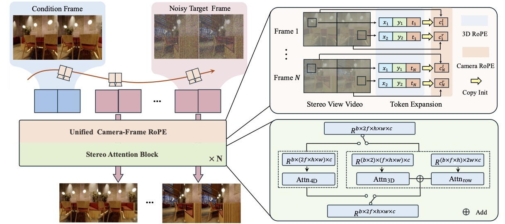
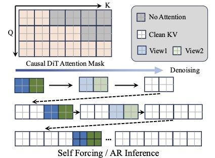

TL, DR: We introduce StereoWorld, a stereo world model capable of performing exploration based on given binocular images, generating view-consistent stereo videos with intrinsic geometric understanding.

Illustration of StereoWorld. Given a pair of stereo images and a conditional camera trajectory, StereoWorld first encodes conditional and noisy video latents from different viewpoints and timesteps using a unified camera–frame RoPE representation. It then performs denoising through a DiT equipped with stereo attention, ultimately producing the final stereo video.
Each video shows stereo video (left) side-by-side with the corresponding depth estimation (right).

Each video shows stereo video (left) side-by-side with the corresponding depth estimation (right).
Our proposed Unified Camera-Frame RoPE is not only effective for stereo generation, but can also be directly extended to multi-view video generation. After embedding our method into the Wan model, we can directly obtain the following result without any additional training. This further demonstrates both the effectiveness of our method and its strong ability to leverage video model priors.
@article{sun2026stereo,
title={Stereo World Model: Camera-Guided Stereo Video Generation},
author={Sun Yang-Tian and Huang Zehuan and Niu Yifan and Ma Lin and Cao Yan-Pei and Ma Yuewen and Qi Xiaojuan},
journal={xxx},
year={2026}
}The website template is borrowed from Nerfies.